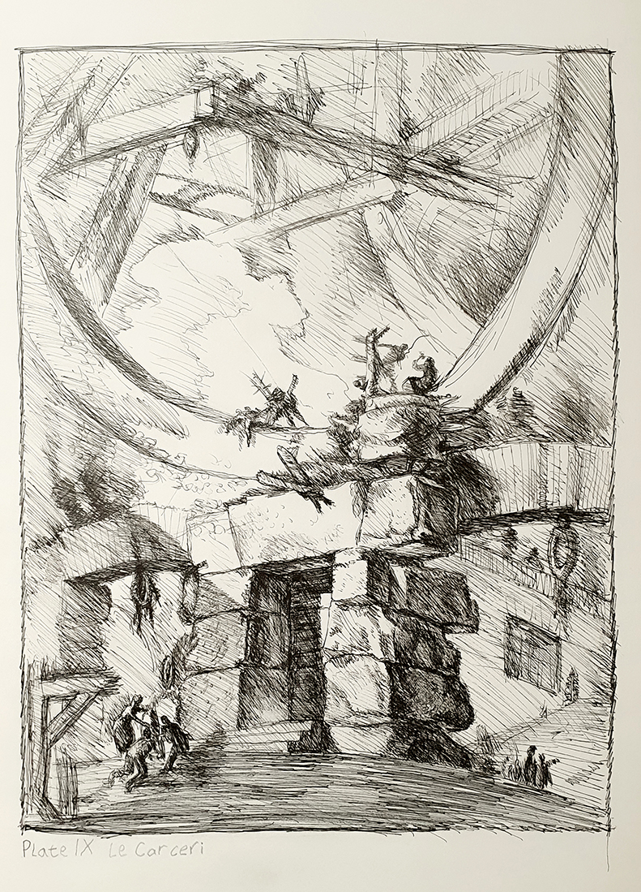
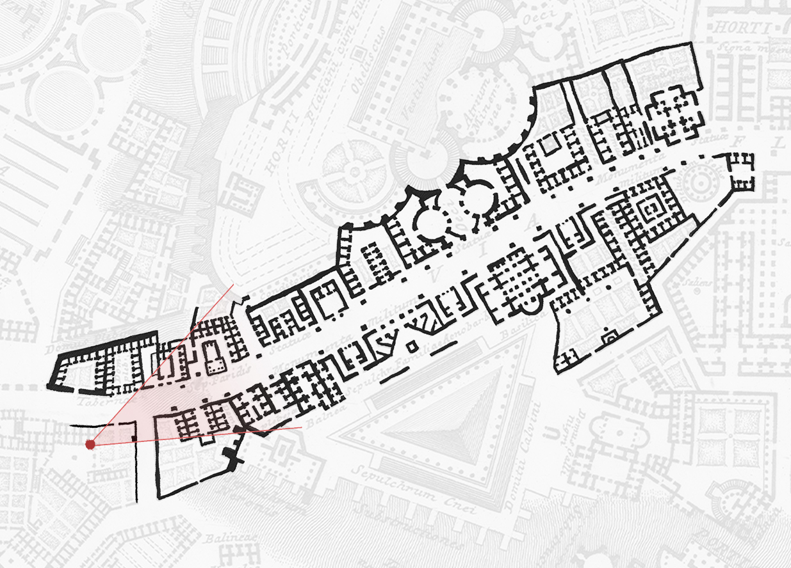
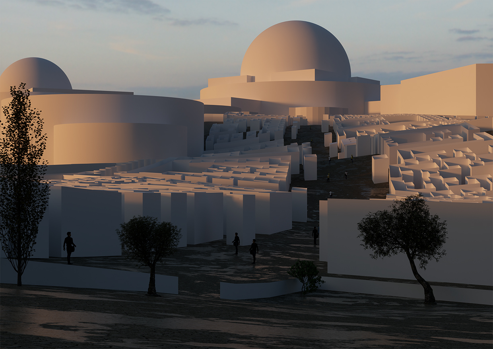
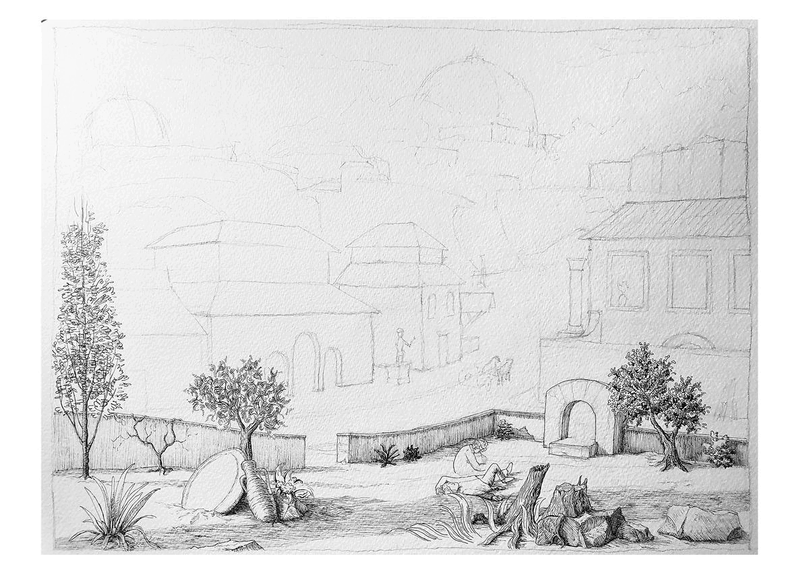

A study of the works of Piranesi
As part of my architecture education I studied the works of Geovanni Battista Piranesi. After getting to know a bit about his life, I decided that the best way to get to know his way of work and ideas is through study by drawing, first closely following his style and then finding my way into my own ideas and way of work to see on what I can improve my own style on, to incorporate a bit of Piranesi in my work. One of the driving forces for me in this is that I’ve been influenced by his drawings at an early age by my aunt, who gave me a set of posters depicting his Le Carceri (The Prisons). Throughout my work there are glimpses of dark themes akin to his which made me curious to his story and the ideas of his time.
I started out by drawing one of his Carceri etches, Plate IX. I still regard it as my favorite work of Piranesi. Upon examining the work while recreating it, it became clear to me that it was made rather quickly, without too much care for hatch angles or using just one type of hatch on a surface. Instead, he guides the eye of the observer by having a few places on the drawing worked out in detail. By slowly looking at different places on the drawing, one tries to understand the parts in the background that are less detailed. This shift in level of detail invites the observer to take up the “story” that Piranesi begins, and continue it with their own views and fantasy. This effect is strengthened by the shadows that are cast on the structure, which makes the observer want to envision turning around to take a look. In the same way the gate in the middle of the drawing makes the observer curious about what’s inside and why it looks different from the rest of the building.
With the Plate IX done, I wanted to create a scene in his map of a fictional and majestic Rome, the Campo Marzio. I was intrigued by the scale of the structures, but especially by the contrast between those buildings and the small housed that where sparkly scattered across the map. It is clear that those houses are not the important part of the map and that Piranesi didn’t intent on making a liveable city, but he still included a few “Domus Plebeja” (houses for the common people) and I wanted to show the contrast between the little houses and the giant structures.
To get to a composition I decided on a spot on the map, traced the buildings and made it into a 3D view in a visualization program, according to the hills of Rome in that area. I took some liberties on the shapes and heights of the buildings as they are unknown, but I followed Roman principles for the large buildings and I looked at houses of reconstructions of Pompeii to draw the houses along the street.
Through drawing the “View on the Campo Marzio”, I noticed I differ in drawing style from Piranesi in a few ways. The first way comes down to line weight and placement. In Piranesi’s detailed etches he draws every line with precision. I do more layers of lines to find the right shape and value. This takes more time and is a result of not having the same level of experience. The second difference is the way we draw people. This one is harder to define. I thought at first that it mostly came down to poses and interaction between people and things around them, but through more comparing I noticed more differences. The first is that I consistently draw the heads larger compared to the body size. I also give them clothes of less complexity, more like our modern-day jackets and jeans. I also use more lines to achieve the same forms, which makes my lines a bit messier, but also a bit more subtle.
You can see my steps from start to finish in the GIF on the right. I work from foreground to background in this ink drawing, as I didn’t really know what shapes I wanted to give the buildings you can see me adding layers to the already drawn foreground, adding details and darkening values to make the background look further away. It’s best described as slowly finding your way through the mist, feeling every form and material while making your way to the background of the drawing. Nothing is certain until the ink is on the paper, but ones it’s there you can’t retrieve it anymore. This makes it a bit scarier than working digital, but it also adds excitement and a feeling of accomplishment with every step you take. Working digitally makes us a bit less careful and less focused, less sweaty with the knowledge you can ruin it in an instant. This focus however makes it so much more satisfying and thoughtful.
Hope you like this artwork, if you do you can buy it in my Etsy store!



